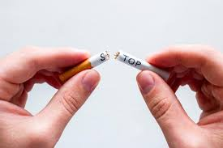

As a community, Black people have not had the best habits in terms of money. Although the system alters our financial success, our rate of homelessness is a result of this. We tend to spend money on addictions such as alcohol, drugs, and tobacco. Quitting these addictions not only account for your mental and physical health, it will save you money. So let's figure out how we can progress towards the purge.
Quitting addictions is a powerful step towards financial independence and overall well-being, especially within the Black community, where systemic challenges often compound the impacts of substance misuse. Breaking free from addictions such as smoking, alcohol, or drug use not only improves health but also significantly enhances financial stability. The costs associated with maintaining an addiction can drain resources that could otherwise be invested in wealth-building activities like education, homeownership, or starting a business. Additionally, the health-related expenses stemming from addiction, including medical bills and lost productivity, further exacerbate financial strain. Accessing culturally competent support systems, such as community groups and counselors who understand the unique experiences of Black individuals, can provide the necessary guidance and encouragement. Embracing healthier habits, like regular exercise, nutritious eating, and mindfulness practices, can replace the void left by addiction and lead to a more balanced lifestyle. Financial literacy programs specifically tailored for the Black community can empower individuals with the knowledge to manage their finances effectively, avoid predatory financial practices, and build generational wealth. By prioritizing sobriety and making conscious financial decisions, individuals can reclaim control over their lives and contribute to the economic strength of their communities. This journey requires resilience, support, and a commitment to positive change, but the rewards—both financial and personal—are profound, offering a pathway to a brighter, more prosperous future.
Back | Next: Credit | Investing | Entrepreneurship